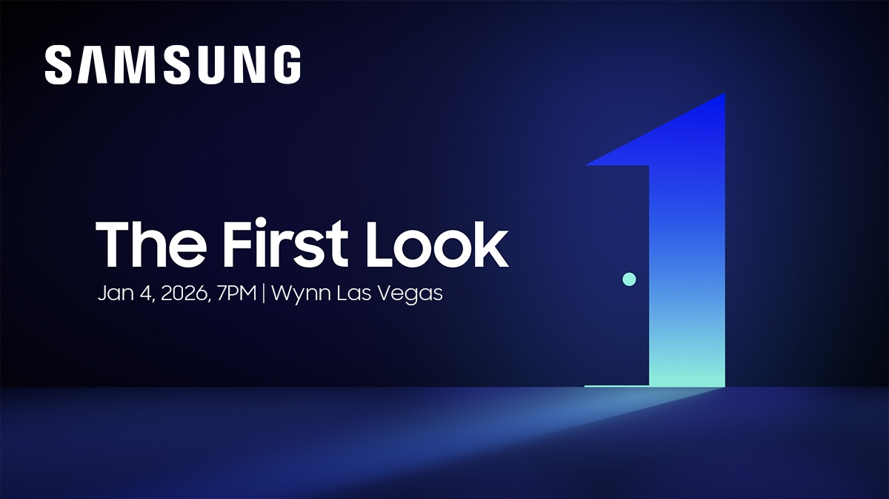

Galaxy Launch Event
Objavljeno: 05.01.2026.
Samsung Galaxy Launch Event donosi premijeru najnovijih uređaja i tehnologija. Događaj okuplja ljubitelje tehnologije iz cijelog svijeta.
Posjetitelji imaju priliku prvi isprobati nove Galaxy uređaje, saznati više o AI inovacijama te pratiti prezentacije vodećih stručnjaka.
Predbilježbom osiguravate pristup ekskluzivnim informacijama i sadržaju s nadolazećeg Samsung događaja.
← Povratak na novosti